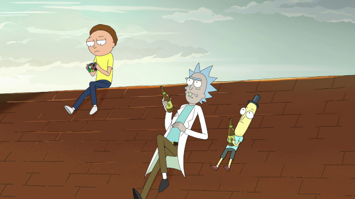

Temas de densidade psicológica e emocional
Não estamos medindo palavras ao afirmar que os roteiros de Rick and Morty foram feitos para serem socos certeiros no estômago. O desenho animado aborda questões relevantes, como o niilismo (termo filosófico que considera que as crenças e os valores tradicionais são infundados e que não há qualquer sentido ou utilidade na existência), alcoolismo, realidades alternativas e política. Mas não precisamos de muito para entender que o principal objetivo é falar sobre o significado da vida.
Como é analisado no vídeo Rick and Morty - Finding Meaning in Life, Rick é um gênio que, em vez de procurar um significado para a vida, ele decide apenas vivê-la ao lado das pessoas que ama -- e apesar desse detalhe passar despercebido por muitos, é essencial para a série. Rick and Morty trata de relações familiares complicadíssimas, principalmente entre o cientista e sua filha, Beth, e demoramos para entender o quão psicológico e emocionalmente profundo esse desenho pode ser.
O humor
Apesar de ter sacadas extremamente inteligentes, Rick and Morty traz o típico humor "sombrio". A série até traz piadas bobas relacionadas a flatulências e outras questões corporais, mas as mais engraçadas são, provavelmente, as mais pesadas.
Não vamos dar spoilers, mas vale dizer que a série tem um humor adulto e mais refinado do que South Park ou Family Guy, porque Rick and Morty não banaliza questões importantes ou sérias simplesmente pelo humor. Por trás de cada risada, ficamos com um sentimento de vazio e aquela "dor da verdade", que é quando o desenho atinge em cheio o ponto que deixa o telespectador rindo para não chorar.
O seriado explora assuntos densos, como o conturbado relacionamento entre Rick e sua família -- que conta com diversos problemas de comunicação --, e mostra como, apesar de ser apenas um desenho, não está nada distante da nossa realidade. Inclusive, em diversos momentos ao longo dos episódios conseguimos nos identificar tanto com os temas abordados quanto com o destino de algum personagem.